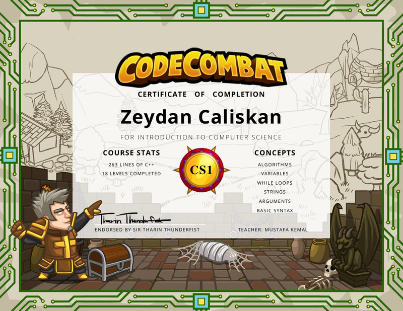

Introduction to Computer Science – CodeCombat
Verilen Kuruluş: CodeCombat
Tarih: Ocak 2024
Açıklama: C++ kullanarak algoritmalar, değişkenler, döngüler, diziler ve temel programlama kavramları üzerine verilen eğitim.

Yazılım Mühendisliği Öğrencisi | Duygusal Zeka & Teknoloji | Kültürel Etkileşimler
Duygusal Zeka, İnsan-Robot Etkileşimi ve Kültürel Bilişsel Psikoloji alanlarında disiplinlerarası çözümler üretiyorum.
Zeydan Çalışkan, 15 Kasım 2000 tarihinde Şanlıurfa, Türkiye’de doğmuş olup, ikametini Kuzey Kıbrıs Türk Cumhuriyeti’nin Lefkoşa kentinde sürdürmektedir. Lisans öğrenimine Uluslararası Kıbrıs Üniversitesi Yazılım Mühendisliği Bölümü’nde devam etmektedir. Akademik ilgi alanları arasında duygusal zeka, insan-bilgisayar etkileşimi ve kültürel psikoloji yer almakta; bu alanlara yönelik çalışmalarda disiplinlerarası bir yaklaşımı benimsemektedir. Araştırmalarında, teknolojik sistemlerin bireylerin bilişsel ve duygusal süreçleri üzerindeki etkilerini inceleyerek insan-merkezli tasarım ve dijital etkileşim alanlarına bilimsel katkı sunmayı hedeflemektedir.
Ayrıca, dil, kültür ve inanç arasındaki ilişkiler ile kültürel etkileşimler konusuna derin bir ilgi duymaktadır. Yazılım mühendisliği disiplininin yanı sıra, antropoloji, biyoloji ve psikoloji alanlarında da kapsamlı bir perspektif geliştirmektedir.
Verilen Kuruluş: CodeCombat
Tarih: Ocak 2024
Açıklama: C++ kullanarak algoritmalar, değişkenler, döngüler, diziler ve temel programlama kavramları üzerine verilen eğitim.
Verilen Kuruluş: Türkiye Teknoloji Takımı Vakfı (T3 Vakfı) & T.C. Sanayi ve Teknoloji Bakanlığı
Tarih: Mayıs 2025
Açıklama: TEKNOFEST teknoloji yarışmalarında finalist olarak seçilmem sebebiyle verilen başarı sertifikası. Proje geliştirme, takım çalışması ve yenilikçilik alanlarında deneyim kazandırdı.

1–4 Mayıs 2025 tarihleri arasında düzenlenen TEKNOFEST’25 KKTC Sosyal İnovasyon Yarışması’na, Duygusal Zeka Geliştirme Platformunun Oluşturulması adlı projemizle katıldık. Projeye yaptığım katkılar dolayısıyla ASBÜ Kuzey Kıbrıs Yerleşkesi tarafından tarafıma bir teşekkür belgesi takdim edilmiştir.
Belgeyi imzalayan: Prof. Dr. Enver ARPA, ASBÜ KKTC Yerleşkesi Rektörü
Yıl: 2025
Konu: Göç süreçlerinin bireyler ve toplumlar üzerindeki kültürel, dilsel ve psikolojik etkileri
Durum: Makale yazım aşamasında, akademik dergi başvurusu planlanmaktadır.
Duygusal zeka geliştirme platformunun oluşturulması üzerine bir söyleşi.
Bilimsel çalışmalarım, eğitim geçmişim ve profesyonel deneyimlerimi içeren akademik özgeçmişime aşağıdaki bağlantıdan ulaşabilir ve PDF formatında indirebilirsiniz.
Bana aşağıdaki kanallardan ulaşabilirsiniz: